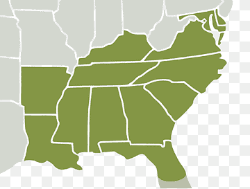

Existe una teoría poco aceptada según la cual los cuatro elementos de la cultura hip hop, que incluyen B-boy, DJ, grafiti y MC, existían tanto en la Costa Este como en la Oeste de los Estados Unidos simultáneamente durante mediados de los años 1970.1 Esta teoría corre en oposición a la convicción universalmente aceptada de que todos los elementos fundamentales del hip hop nacieron y se cultivaron exclusivamente en la Costa Este, especialmente en la ciudad de Nueva York.1 La escena de hip hop de la Costa Oeste comenzó en 1978 con la formación de Uncle Jamm's Army, que comenzaron bajo el nombre Unique Dreams Entertainment. El grupo estaba influenciado por Prince, east coast electro, Kraftwerk y Parliament-Funkadelic. En 1980, Uncle Jamm's Army se convirtieron en los mayores promotores de fiestas en LA. En 1983, el líder del grupo Roger Clayton, bajo la influencia del álbum de Funkadelic "Uncle Jam Wants You" cambió el nombre del grupo. 1984 fue el año en que Uncle Jamm's Army publicó su primer sencillo, "Dial-a-Freak", concediendo con la publicación por Egyptian Lover de su álbum "Nile". En la ciudad de Compton el exbailarín Alonzo Williams formó el grupo de electro hop World Class Wreckin' Cru junto a los futuros miembros de N.W.A Dr. Dre y DJ Yella. Williams fundó Kru-Cut Records y creó un estudio de grabación en la parte trasera de su discoteca Eve's After Dark. El club era el lugar al que solían acudir el camello local Eazy-E y Jerry Heller, así como otros raperos. 
A continuación, los raperos más resaltantes de la Costa Oeste:
Cancion de un artista de la Costa Oeste - It Was Good Day (Ice Cube)
Video corto que da un pequeño contexto
El East Coast rap o east coast hip hop es un subgénero regional del rap que se originó en la ciudad de Nueva York (Estados Unidos) durante los años 1970. El East Coast rap ha sido definido como la forma primera y original del rap.1 El estilo surgió como género definitivo una vez que fueron apareciendo artistas de rap en otras regiones de Estados Unidos.
El término East Coast hace referencia a la Costa Este de los Estados Unidos.
En contraste con la sencillez de los patrones rítmicos y estructuras del old school rap, el East Coast rap se caracteriza por su énfasis en la destreza lírica.2 También se ha llamado la atención sobre la presencia en este subgénero de rimas multi silábicas, historias complejas, un flow continuo y fluido y metáforas intrincadas.2 Aunque el East Coast rap no posee un sonido uniforme o un estilo estandarizado, tiende a gravitar en torno a beats agresivos y collages de samples.1 Los beats duros y agresivos fueron practicados especialmente por grupos como EPMD y Public Enemy, mientras que artistas como Eric B. & Rakim, Boogie Down Productions, Big Daddy Kane y Slick Rick y The Notorious B.I.G.son significativos por su habilidad lírica.1 La temática lírica durante la historia del East Coast rap han comprendido desde los "temas conscientes" de artistas como Public Enemy y A Tribe Called Quest hasta el mafioso rap de raperos como Raekwon y Kool G Rap.
A continuacion, los raperos mas resaltantes de la Costa Este
Cancion muy emblematica de la Costa Este : N.Y. State of Mind (Nas)
La rivalidad entre raperos de la Costa Oeste y la Costa Este fue una enemistad que se inició a comienzos de la década de 1990 entre los raperos y fanes de la Costa Oeste y los de la Costa Este de Estados Unidos. El foco de esta rivalidad estaba en Tupac Shakur y su discográfica Death Row Records (establecida en Los Ángeles), de la Costa Oeste, y The Notorious B.I.G. y su discográfica Bad Boy Records, de la Costa Este, establecida en Nueva York. Los dos artistas fueron asesinados de la misma forma; por agresores desconocidos al recibir tiros de un vehículo en movimiento, en 1996 y 1997, respectivamente.
El primer rastro significativo de una rivalidad entre las dos costas dentro del hip hop ocurrió en 1991, cuando el rapero neoyorquino Tim Dog lanzó la canción Fuck Compton, una diss para el grupo californiano N.W.A, donde ataca a los raperos con el estilo de la Costa Oeste. El ataque tuvo varias respuestas de artistas como Compton's Most Wanted o DJ Quik, además del de N.W.A. En 1992, el joven rapero y productor Dr. Dre se aleja de N.W.A. por problemas con Eazy-E, Alias : The Godfather Of Gangsta Rap por la distribución de las ganancias en la NWA, para crear su propia discográfica, la Death Row Records, junto con su ex-guardaespaldas Suge Knight. Posteriormente, Dre lanza su primer disco en solitario titulado The Chronic con este sello, el mismo recibió tres discos de platino y fue incluido entre los 500 mejores álbumes de todos los tiempos según la revista Rolling Stone. La Death Row Records trajo rap muy popular de la Costa Oeste con nombres como Tupac Shakur, Snoop Dogg o The Dogg Pound. Al otro lado del país, en la Costa Este, el productor Sean Combs (Puff Daddy) fundó en 1993 su discográfica, la Bad Boy Records, e intentó, sin éxito, llevarse a Tupac para su discográfica. En 1994, después de que Tupac fuera robado y disparado cinco veces en su estudio, Combs firma con The Notorious B.I.G..3 Tupac estaba preso acusado de violación y siempre dijo que Puff (Combs) y Biggie (B.I.G.) sabían del ataque y no lo avisaron. Ese mismo año, B.I.G. lanza su álbum Ready to Die, obteniendo una significativa popularidad con él y revitalizando así el hip hop de la Costa Este. Mientras estaba en prisión, Tupac firmaba con Death Row Records y salía bajo fianza con el pago de su fianza por Suge Knight. Tupac, posteriormente, lanzaría el disco All Eyez on Me, donde hace ataques a Biggie, Combs y toda la Bad Boys, protagonizando así el alza de la disputa.
Esa rivalidad, que a ojos de muchos fanes del hip hop era solo un gran esquema de marketing, tuvo un final trágico con la muerte tanto de Tupac Shakur como de Notorious B.I.G., cuando ambos lados entraron en un consenso de paz, ya que gran parte de esa rivalidad se centraba en la lucha de esos dos raperos.56 Los fanes del rap fueron sacudidos, primordialmente, por la muerte de Eazy-E, miembro de N.W.A., y la muerte de Tupac y Biggie causó una conmoción aún mayor, y esa es la razón por la cual estos tres raperos se han vuelto los tres iconos más influyentes en la historia del rap, hasta nuestros días.